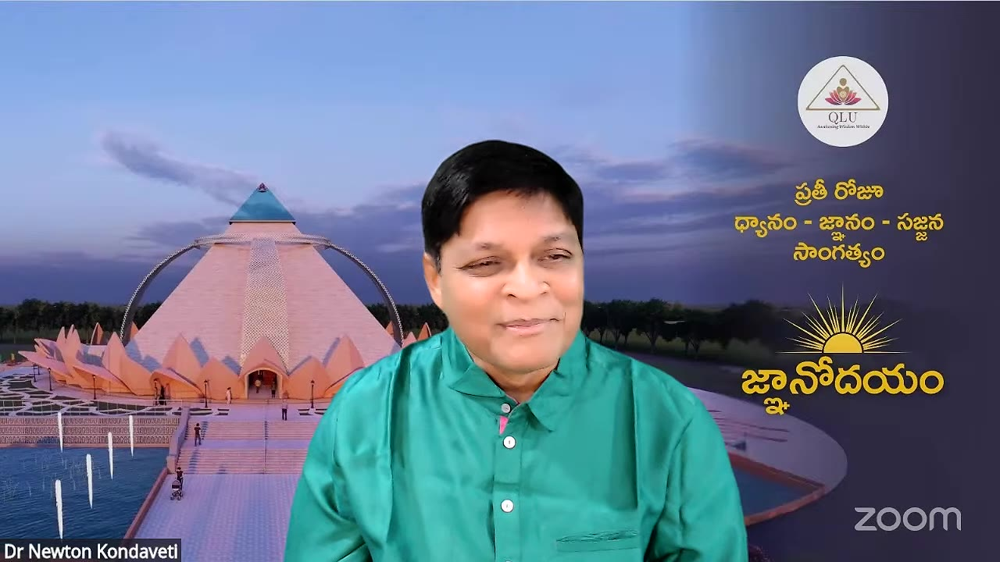

01 · ఈ నెల ఆధ్యాత్మిక జ్ఞానసారం · పూర్తి కథనం
పరాశక్తి మహిమ — మహిషాసురమర్దిని రూపంలో దాగిన ఆధ్యాత్మిక సందేశం
ఆరవ రోజు బోధనలో మహిషాసురమర్దిని కథను సాధకుడి అంతర్గత ప్రయాణానికి ప్రతీకగా వివరిస్తారు. ధ్యానం, చక్రాల గురించిన ఆధ్యాత్మిక అవగాహన, మనుగడ భయాలు, భావోద్వేగ బంధనాలు, హింసాత్మక ప్రవృత్తులు వంటి అంతఃశత్రువులపై జాగృతి — ఈ అంశాలు పరస్పరం అనుసంధానమై కనిపిస్తాయి. దేవీ రూపంలోని శక్తిని బాహ్య యుద్ధకథగా మాత్రమే కాకుండా మనలోని పరివర్తనకు సంకేతంగా దర్శించాలని Dr. Newton సూచిస్తారు.
ప్రధాన బోధనలు
మహిషాసురుడు — ధ్యాన మార్గంలోని సంకేతం
మిత్రులారా, మహిషాసురుడి కథను విన్నప్పుడు మనం దానిని కేవలం ఒక అసురుడి చరిత్రగా మాత్రమే చూడకూడదు. ఆ కథ ద్వారా మన సాధనలో ఎదురయ్యే స్థితులను కూడా పరిశీలించవచ్చని ఈ బోధన సూచిస్తుంది. మహిషాసురుడు మేరు శిఖరంపై తపస్సు చేశాడనే కథాంశాన్ని, సాధకుడు ధ్యానంలో ఉన్నతమైన చైతన్యస్థితులను అన్వేషించడమనే ప్రతీకతో అనుసంధానిస్తుంది.
శ్వాసపై ధ్యాస పెట్టి ధ్యానం చేస్తున్నప్పుడు కొందరికి వివిధ అనుభూతులు కలగవచ్చు; మరికొందరికి అలాంటి ప్రత్యేక అనుభూతులు కనిపించకపోవచ్చు. చక్రాల గురించి ప్రసంగంలో వివరించే ఆధ్యాత్మిక నమూనాలో, ప్రతి దశలో ఒక అనుభవం తప్పనిసరిగా కలగాలని నిర్ణయించుకోవద్దని సూచిస్తారు. ఒకరు తమకు ‘మూడో కన్ను’ లేదా ‘సహస్రార’ అనుభూతి కలిగిందని చెప్పినా, దానిని అందరికీ వర్తించే ఒకే క్రమంగా తీసుకోవాల్సిన అవసరం లేదనే భావన ఇక్కడ వ్యక్తమవుతుంది.
ఈ చక్రాలు, సుషుమ్నా నాడి, శక్తిజాగరణ గురించి చెప్పబడినవి ప్రసంగంలోని యోగ–ఆధ్యాత్మిక వ్యాఖ్యానాలు; వాటిని నిర్ధారిత శరీరశాస్త్ర ప్రక్రియలుగా ఈ సంపాదకీయ సంచిక ప్రతిపాదించడం లేదు.
దేవీ శక్తి, చక్రాలు, అంతఃశత్రువులు
మూలాధారానికి సంబంధించిన మనుగడ భయాలు, స్వాధిష్ఠానంతో అనుసంధానించిన భావోద్వేగ సంఘర్షణలు, మణిపూరకంతో అనుసంధానించిన హింసాత్మక లేదా ఆధిపత్య ధోరణులు — వీటిని సాధకుడు తనలో పరిశీలించాల్సిన అంతర్గత అంశాలుగా ప్రసంగం వివరిస్తుంది. ఇక్కడ ‘శత్రువు’ అంటే ఎక్కడో బయట ఉన్న వ్యక్తి మాత్రమే కాదు; మనల్ని మనమే బంధించే అలవాట్లు, భయాలు, ప్రతిచర్యలు కూడా.
భయపడిన జంతువు తన రక్షణ కోసం దాడి చేయవచ్చు. అలాగే మనిషిలోనూ మనుగడకు సంబంధించిన భయాలు కొన్ని సందర్భాల్లో హింసాత్మక ప్రతిస్పందనలను రేకెత్తించవచ్చని బోధన ఉదాహరణ ఇస్తుంది. ఆ ప్రతిస్పందనలను గుర్తించి, ఎరుకతో అధిగమించడమే అంతర్గత యుద్ధానికి ఒక అర్థం. మహిషాసురమర్దిని రూపంలో జగన్మాత ఈ అంతఃశత్రువులతో యుద్ధం చేస్తుందని చెప్పడాన్ని సాధకుడి పరివర్తనకు సంకేతంగా ఇక్కడ చదువుతాం.
పద్దెనిమిది బాహువులు — బాహ్య యుద్ధం కాదు, అంతర్గత సాధన
మిత్రులారా, మహిషాసురమర్దిని రూపాన్ని మనం చూసినప్పుడు పద్దెనిమిది బాహువులు, అనేక ఆయుధాలు కనిపిస్తాయి. ఆ ఆయుధాలను కేవలం ఇతరులను సంహరించడానికి ఉపయోగించే వస్తువులుగా అర్థం చేసుకోకూడదని Dr. Newton వివరిస్తారు. సాధకుడి అంతర్గత శత్రువులను ఎదుర్కోవడానికి అవసరమైన జ్ఞానం, శక్తి, ఎరుక అనే కోణంలో వాటిని చూడాలి.
కథలో దేవతల శక్తులన్నీ ఒకచోట చేరి దేవీ శక్తిగా ఆవిర్భవిస్తాయి. అలాగే మనలోని భయం, కోపం, మోహం, ఆధిపత్య భావన వంటి ప్రవృత్తులను గుర్తించి అధిగమించడానికి మన అంతర్గత శక్తి మేల్కొనాలని ఈ రూపకం సూచిస్తుంది. దేవీ చేతుల్లోని ఆయుధాలు ఎవరి మీదనో దాడి చేయడానికి కావు; మనలోని అజ్ఞానం, బంధనాల మీద ఎరుకను నిలబెట్టడానికి సంకేతాలని ప్రసంగం చెబుతుంది.
చైతన్య అవస్థలు — జాగ్రత్, స్వప్న, సుషుప్తి, తురీయం
ధ్యాన సాధకులకు వివిధ అనుభవాలు రావచ్చని Dr. Newton వివరిస్తారు. కొన్నిసార్లు శరీరానికి సంబంధించిన అనుభూతులు, మరికొన్నిసార్లు దృశ్యాలు, రంగులు, ప్రకృతి దృశ్యాలు, ఋషులు కనిపించినట్లనిపించే అనుభవాలు ఉండవచ్చు. వాటిని ఆయన యోగ సంప్రదాయంలోని జాగ్రత్, స్వప్న, సుషుప్తి అనే అవస్థలతో అనుసంధానిస్తారు.
జాగ్రత్ అవస్థలో బాహ్య ప్రపంచం పట్ల మన ఎరుక పనిచేస్తుంది. స్వప్నావస్థకు సంబంధించిన అనుభవాల్లో సాధకుడు భిన్నమైన దృశ్యాలు లేదా భావనలను అనుభూతి చెందవచ్చు. సుషుప్తి అవస్థను కారణదేహంతో అనుసంధానించి వివరిస్తారు. ఈ మూడు అవస్థలకు అతీతమైన చైతన్యస్థితిగా తురీయం గురించి బోధన సాగుతుంది. ప్రసంగంలోని ఈ వివరణ యోగ–ఆధ్యాత్మిక అనుభవాల వ్యాఖ్యానం; ప్రతి సాధకుడికి ఒకే విధమైన అనుభూతులు తప్పనిసరిగా కలుగుతాయని అర్థం కాదు.
ఇక్కడ ప్రధానమైనది ఒక ప్రత్యేక దృశ్యాన్ని పొందామా లేదా అన్నది కాదు. అనుభవం వచ్చినా రాకపోయినా సాధనలో ఎరుక, స్థిరత్వం, వినయం కొనసాగాలి. ధ్యానంలో కలిగిన అనుభవాలను పోల్చుకుని ఎవరు గొప్ప, ఎవరు తక్కువ అని నిర్ణయించుకోవద్దు.
జగన్మాతను చేరే నాలుగు స్థితులు
ఆరవ రోజు ప్రత్యేకతగా Dr. Newton సాలోక్యం, సామీప్యం, సారూప్యం, సాయుజ్యం అనే నాలుగు స్థితులను అనుభూతి ఆధారిత సాధనగా పరిచయం చేస్తారు. ఇవి కేవలం పదాలు కావు; మన అంతర్గత సంబంధం ఎలా లోతుగా మారుతుందో చూపించే నాలుగు మెట్లు.
సాలోక్యం: మొదట జగన్మాతను గుర్తించాలి. ఆమె ఉనికిని మన దృష్టిలోకి తీసుకురావాలి. అమ్మకు ఒక రూపం తప్పనిసరి కాదని, మన హృదయం నుంచి ఏ భావంతో పిలిచినా ఆ తల్లి భావాన్ని అనుభవించవచ్చని ప్రసంగం వివరిస్తుంది. ఈ మొదటి దశలో ధ్యాసను ఒకచోట నిలబెట్టడం ముఖ్యం.
సామీప్యం: తర్వాత తల్లి దగ్గరకు చేరుతున్నామనే భావన. చిన్నబిడ్డ తల్లివైపు పరుగెత్తినట్లుగా, భయంతో కాదు ప్రేమతో ఆమె సమీపాన్ని అనుభవించాలి. హిమాలయాల దగ్గరకు వెళ్తే అక్కడి చల్లదనం తగిలినట్లు, మనం ఏ భావానికి దగ్గరవుతామో దాని ప్రభావాన్ని అనుభూతి చెందుతామని Dr. Newton ఉపమానంగా చెబుతారు.
సారూప్యం: తల్లి గుణాలను మనలో పెంపొందించుకోవడం. కరుణ, ప్రేమ, శక్తి, సమత్వం వంటి లక్షణాలు కేవలం ఆరాధించే దైవానికి మాత్రమే చెందినవి కాకుండా మన జీవనంలో వ్యక్తమవ్వాలని భావించడం. మనం చూసే దైవరూపాన్ని మన ప్రవర్తనలో ప్రతిబింబింపజేయడమే ఈ దశలోని అంతరార్థం.
సాయుజ్యం: చివరికి తల్లి వేరు, నేను వేరు అనే భావన తగ్గి ఏకత్వానుభూతి వైపు సాగడం. తల్లి గర్భంలో ఉన్న శిశువు తల్లితో విడదీయలేని సంబంధంలో ఉన్నట్లుగా, జగన్మాతతో ఏకత్వాన్ని భావించాలని ప్రసంగం సూచిస్తుంది. ఇది సాధకుడి అంతర్ముఖ ధ్యానభావనగా వివరించబడింది.
నాలుగు దిశలు — భావనను శరీరంతో అనుసంధానించడం
ఈ నాలుగు స్థితులను కేవలం వినడమే కాకుండా, కూర్చున్న దిశను లేదా భంగిమను కొద్దిగా మార్చుకుంటూ ఒక్కో దశను అనుభవించాలని Dr. Newton సూచిస్తారు. కారులో గేర్లు మార్చినట్లుగా ఒక్కో దశలో ధ్యాసను మరింత లోతుగా తీసుకెళ్లడం అనే ఉపమానం ఉపయోగిస్తారు. మొదట తల్లి ఉనికిపై ధ్యాస, తర్వాత ఆమె సమీపం, ఆపై ఆమె గుణాలతో అనుసంధానం, చివరికి ఏకత్వ భావన — ఇదే క్రమం.
ప్రతి దశలో కొద్దిసేపు నిలిచి భావనను గమనించమని చెప్పబడింది. సాధన యొక్క ఉద్దేశం ఏదైనా అసాధారణ అనుభూతిని బలవంతంగా కలిగించుకోవడం కాదు; భావనను స్పష్టంగా, ప్రశాంతంగా, ఎరుకతో నిలబెట్టుకోవడం.
దేవీ సమర్పణ — నమస్కారంలో అద్వైతం
నాలుగు స్థితుల సాధనకు ముందు దేవీ సమర్పణను మళ్లీ వివరిస్తారు. లక్ష్మీ ముద్రలో కూర్చోవడం, ఎడమ కాలును కుడి కాలుపై ఉంచే భంగిమ, ఎడమ నాసికకు సంబంధించిన చంద్రస్వర భావన, నమస్కార ముద్ర, తలను వంచడం వంటి దశలు ప్రసంగంలో ఉన్నాయి. నమస్కారం అంటే ఎదుటివారిలోని ఆత్మను గౌరవించడం; ‘నేను–నువ్వు వేరు కాదు’ అనే అద్వైత భావన అని Dr. Newton వివరిస్తారు.
తలను వంచేటప్పుడు అహంకారాన్ని, మమకారాన్ని, మనలోని అడ్డంకులను జగన్మాత పాదాల దగ్గర ఉంచుతున్నామనే సమర్పణ భావం ప్రధానమైనది. శ్వాసను దశలవారీగా తీసుకోవడం, నిలిపి ఉంచడం వంటి ప్రత్యేక ప్రక్రియలు కూడా ప్రసంగంలో వివరించబడ్డాయి. వాటి ఖచ్చిత క్రమాన్ని ఆడియోతో ధృవీకరించకముందు స్వతంత్ర శ్వాసాభ్యాస సూచనలుగా ప్రచురించడం సముచితం కాదు. ఇక్కడ నిలుపుకోవాల్సిన జ్ఞానం సమర్పణ యొక్క అంతరార్థం.
త్రిశూలం — మూడు గుణాలను దాటే జ్ఞానం
సాయుజ్య స్థితికి చేరే భావనలో జగన్మాత చేతిలోని త్రిశూలం ప్రధాన ప్రతీకగా వస్తుంది. దాని మూడు మొనలు తమోగుణం, రజోగుణం, సత్త్వగుణం అనే త్రిగుణాలను సూచిస్తాయని ప్రసంగం వివరిస్తుంది. వీటి ప్రభావాన్ని తెలుసుకుని వాటికి అతీతంగా నిలిచే త్రిగుణాతీత స్థితి వైపు సాధన సాగాలి.
అలాగే జాగ్రత్, స్వప్న, సుషుప్తి అనే మూడు అవస్థలను దాటి తురీయ స్థితిని గుర్తుచేసే ప్రతీకగా కూడా త్రిశూలాన్ని ఉపయోగిస్తారు. చేతిలో నిజంగా ఆయుధం పట్టుకోవడం కాదు; మనలోని బంధనాలను దాటే శక్తి ఉందనే అంతర్గత భావన కలిగి ఉండడం. జగన్మాతను బయట దర్శించే స్థితి నుంచి ‘ఆ తల్లితో నేను వేరు కాదు’ అనే అనుభూతి వైపు కదలడమే ఈ సాధనలోని ముగింపు.